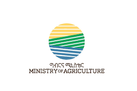
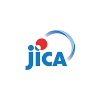

Guideline For Implementation of Index based Crop Insurance
January 2024


Terminology
| Term | Descripition |
|---|---|
| Basis Risk | Basis risk in the context of index-based insurance refers to the risk that the index used to determine insurance payouts does not actually reflect the actual losses or damages experienced by the insured farmers. In other words, the index may not accurately represent the impact of damage in the farm field. This can occur due to various reasons, including variations in local conditions and differences in the timing of the index measurements. |
| Crop Cutting Experiment | A crop cutting experiment is a scientific method to estimate crop yields in a specific area. It is a crucial tool for insurance companies to decide whether they provide payouts or not under the area yield index insurance scheme. |
| Exit | Exit refers to the value at which full (100%) sum insured is paid to the policy holder. It is defined during the policy creation phase. |
| Insurance Policy | An insurance policy is a contract document between an individual or entity and an insurance company. This contract outlines the terms, conditions, and specifics of the insurance coverage provided by the insurer. |
| Moral Hazard | Moral hazard refers to the idea that insured farmers may take on more risk or pay less attention to their farming activities because they know they are protected by insurance. For example, if a farmer has agricultural insurance, he/she might be less inclined to work hard on their farming because he/she believes that the insurance will compensate for crop losses. |
| NDVI | NDVI stands for Normalized Difference Vegetation Index, and it is a widely used for vegetation index in remote sensing and environmental science. NDVI is a quantitative measure of the health, density, and vitality of vegetation, primarily on the Earth’s surface. |
| Payout | A payout is referred to as an insurance claim payout. It is the sum of money that an insurance company provides to the policyholder or a beneficiary when a covered loss or event occurs. |
| Policyholders | A policyholder is an individual or entity that owns an insurance policy. The policyholder is the person or organization that enters into a contractual agreement with an insurance company by purchasing an insurance policy. |
| Premium | Premium is the amount of money an individual or business pays for an insurance policy. It is normally expressed as a percentage of the sum insured. |
| Reinsurance | Reinsurance is a financial arrangement used by insurance companies to manage and mitigate their own risks. It involves one insurance company transferring a portion of its liabilities or risks to another insurance company (the reinsurer) in exchange for a premium. |
| Sum Insured | Sum insured is the maximum claim amount payable once the index crosses the exit value. |
| Trigger | Trigger refers to value at which payouts begins. It is set during product development and is provided in the policy document. |
Preface
Agriculture is the main industry in Ethiopia, consisting of approximately 40% of the Gross
Domestic Product (GDP) and employing over 80% of the workforce. Yet, it faces various risks,
such as drought, floods, pests, and diseases. These risks have hindered farmers from
increasing productivity. Therefore, managing these risks is crucial for accelerating the
transformation of the agricultural sector in Ethiopia.
The government of Ethiopia has emphasized the importance of agricultural insurance in policy
documents such as “Ethiopia 2030: The Pathway to Prosperity”, “Ten Years Perspective
Development” and “Revised Agriculture and Rural Development Policy”. The specific action
guideline is necessary for making these policies into specific actions and further development
of agricultural insurance in Ethiopia.
The main target users of this guideline are officers from 1) the Ministry of Agriculture and 2)
the Regional Agricultural Bureaus - particularly, officers who engage in agricultural insurance
implementation.
The guideline does not exclude other practitioners such as staff from insurance companies
and intermediaries such as banks, Microfinance Institutions (MFIs), Saving Credit and
Cooperatives (SACCOs), agricultural cooperatives, and other insurance service providers. It
can also assist these institutions in jointly implementing index-based crop insurance with the
government.
PART I
Agricultural Insurance Promotion
1. Introduction
PART I of this guideline describes some key concepts and backgrounds around index-based crop insurance.
The following chapter (Chapter 2) introduces key
concepts which implementers of agricultural
insurance promotion must understand. It starts
from the broad concept of agricultural risk
management, then is going to narrow down into
more specific and concrete issues, such as
agricultural insurance in general and index-based
agricultural insurance.
Chapter 3 focuses on current status of agricultural
insurance particularly in Ethiopia. Brief history of
insurance promotion efforts is described followed
by important challenges observed in the past
experiences. As an example of index-based crop insurance project, the JICA ICIP approach is
also introduced in this chapter.

The final chapter (Chapter 4) suggests potential government interventions to deal with challenges identified in Chapter 3.
2. Risk Management Approach
2.1 Agricultural Risk Management
Agricultural risk management involves strategies and practices that farmers and other relevant
stakeholders use for minimizing and dealing with the various risks associated with farming.
These risks can include different factors, such as weather fluctuations, market price
fluctuations, yield losses, pests and diseases, and policy changes.
Agricultural risk management consists of two main components: 1) Risk control activities and
2) Risk finance activities. The main objective of risk control activities is to reduce or avoid
farming risks, such as introduction of new varieties and technologies, diversification of crops,
and other risk reduction practices.
Risk finance activities include a series of financial tools and resources, such as agricultural
insurance, savings, and financial planning to manage the financial impact of the farming risks.
These agricultural risk finance mechanisms are important for strengthening the resilient and
sustainable farming.
Effective agricultural risk management requires a combination of risk control activities and risk
finance activities. The comprehensive agricultural risk management practices help farmers
build resilience and ensure the long-term viability of agricultural operations. The following
diagram shows the concept of agricultural risk management:
2.2 Agricultural Insurance
Insurance is a financial arrangement between an individual or entity and an insurance
company that provides financial protection against specific risks or losses. It can be defined as
the protection of individuals and entities against specific risks in exchange for premiums based on the likelihood and cost of the associated risks.
Individuals facing similar risks join together and agree that if one of them experiences a loss,
the others will collectively share the loss and provide compensation to the affected ones. In
essence, insurance serves as a mutual aid system where non-affected individuals contribute
money to support those who experience losses.

Agricultural risks vary from localized risks like pests and diseases affecting individual farms to systemic risks such as drought affecting an entire region. These risks encompass potential yield losses and various other risks, including price fluctuations that can affect production costs and agricultural income. The following table summarizes the major risks within the agriculture sector:
| Type of Risks | Description | Measures (example) |
|---|---|---|
| Yield losses |
• Weather related risks: drought, floods, pests and diseases and other natural disasters |
• Agricultural insurance • Climate resilient agriculture • Pest and disease management • Diversification of farming |
| Price fluctuations |
• Price escalation for agricultural
inputs • Low price for agricultural production |
•Contract farming • Crop diversification |
| Labor and health | •Illness, injury, and death |
•Health insurance • Life insurance • Labor management |
| Financial risks |
• Interest-rate fluctuation • Limited access to financial sources |
• Financial arrangement • Savings •Diversification of financial sources |
| Policy and political risks |
• Regulatory change • Political uncertainty |
•Information gathering |
Source: The JICA ICIP Team based on “PARM: Managing Risks to Improve Farmers Livelihoods”
Agricultural risk management is to mitigate, cope with, and transfer these risks. Agricultural
insurance is one of the tools to transfer these risks, mainly yield loss risks.
There are different types of agricultural insurance products, indemnity-based and index-based.
Indemnity-based insurance is a traditional type requiring loss assessment, whereas index
based insurance uses predetermined indices such as rainfall amounts. The following table
summarizes the differences between indemnity-based agricultural insurance and index-based
agricultural insurance:
| Category | Indemnity-based | Index-based |
|---|---|---|
| Overview |
The payout is given based on the
actual losses suffered by insured
farmers. The payout is determined by evaluating the damage or losses occurred and compensating accordingly. |
The payout does not rely on the actual
losses or damage. It is given based on
predetermined indices or benchmarks,
such as rainfall amounts and other
specific parameters. The payout is triggered when the index reaches a certain level, irrespective of the actual losses experienced by insured farmers. |
| Loss Verification |
It requires loss assessment to verify
the actual losses. Insurers need to assess the damage on individual farmland. |
The payout relies on predetermined indices; thus, individual loss verification is not necessary. |
| Risk coverage | Almost all the natural disasters. | It depends on indices. |
| Basis risk | No basis risk. | Basis risk arises when the index measurements do not match an individual insured’s actual losses. |
| Moral hazard | Moral hazard may occur. | No moral hazard. |
| Applicability | It is commonly used in various types of insurance, including property, health, and liability insurance. | It is frequently used in situations where it is difficult to assess individual losses accurately, such as crop insurance or natural disaster insurance. |
| Complexity | It can be more complex due to the need for loss assessment and claim processing. | It is simpler in terms of claim processing and premium determination. |
2.3 Index-based Agricultural Insurance
Various agricultural insurance products are available, with the primary type being “Index-based
agricultural insurance.” The main advantages of index-based agricultural insurance compared
to Indemnity-based agricultural insurance include simplified claim processes, lower
administrative costs, and faster payouts because insurance companies do not need to conduct
loss assessment surveys for each farm.
In addition, index-based agricultural insurance is expected to reduce moral hazard since it
relies on objective indices rather than individual farming behaviours. Considering these points,
index-based agricultural insurance is the suitable insurance scheme, particularly for
smallholder farmers. The table below summarizes the key features of each type of agricultural
insurance and provides a comparative perspective.
| Category | Type | Features |
|---|---|---|
|
Indemnity-based Agricultural Insurance |
Named-peril Crop Insurance | Insure a single peril such as freeze, hail or fair, etc. |
| Multi-peril Crop Insurance (MPCI) | Insure multiple perils including adverse weather, fire, pests, and diseases and so on. | |
| Crop Revenue Insurance | Crop Revenue Insurance | Insure revenue losses causes by a change of harvest price, crop failure or any other reasons. |
|
Index-based Agricultural Insurance |
Weather Index Insurance | Insure weather related risks using a weather index such as rainfall to determine payouts. |
| Area Yield Index Insurance | Insure yield decrease using area wise yield as an index to determine payouts | |
Vegetation Index Insurance

|
Insure crops or grazing land using a vegetation index. A vegetation index is usually calculated by transforming the observations from multiple spectral bands from space. | |
| Livestock Insurance | It protects livestock owners against financial losses resulting from death, theft, or other perils affecting their livestock. | |
| Others | There are also other types of insurance such as greenhouse insurance, forest insurance, and aquaculture insurance. |
Source: The JICA ICIP Team
Africa’s experience with agricultural insurance is mostly confined by index-based agricultural
insurance because of the above characteristics. Typically, index-based agricultural insurance
is expected to decrease insurers’ costs. This, in turn, has the potential to lower premiums,
offering smallholder farmers the opportunity to join in the agricultural insurance market.
Although index-based agricultural insurance can address some of the challenges associated
with indemnity-based agricultural insurance, there are still general challenges for widespread
adaptation of index-based crop insurance, such as data availability and lack of awareness.
The following table summarizes the main challenges of index-based agricultural insurance.
| Area | Main Challenges |
|---|---|
| Data Availability & Accuracy | Insurance promotion relies on accurate data, such as historical weather data and yield data. There may be challenges in collecting accurate datasets. |
| Basis Risk | If the index does not reflect farmers’ loss experience correctly, the reliability of insurance is reduced. |
| Index Design | Local conditions should be taken into consideration for designing indices. It may take time and need expertise for index design. |
| Lack of Awareness | Awareness creation about index-based agricultural insurance is essential for scaling up. |
| Lack of Infrastructure | Insurance operation often needs reliable infrastructure, such as the internet connection and communication networks. |
| Affordability & Premiums | Index-based agricultural insurance should offer affordable premiums for smallholder farmers. |
| Lack of Regulatory Framework | Lack of regulatory framework may impede the development of index-based agricultural insurance. |
| Lack of Government Policies | Government should show the clear policy direction for agricultural insurance. |
3. Agricultural Insurance in Ethiopia
3.1 Current Status
Agricultural insurance, particularly index-based insurance, is a relatively new concept in
Ethiopia. Initiatives, such as the World Bank pilot project in 2006 and subsequent
collaborations involving insurance companies like Ethiopian Insurance Corporation (EIC),
Nyala Insurance S.C. (NISCO) and Africa Insurance Company S.C. (AIC) introduced index
based insurance for crops like maize and teff.
Oromia Insurance S.C. (OIC), with support from partners like the Japan International
Cooperation Agency (JICA) and the International Livestock Research Institute (ILRI), played a
role in launching Index-based crop insurance and index-based livestock insurance in 2012.
Over time, various projects and partnerships, including the R4 Rural Resilience Initiative,
aimed to expand index-based insurance to drought-prone areas and pastoralist populations.
In more recent years, the World Bank launched the livestock insurance initiative in 2023. In
addition, the R4 Rural Resilience Initiative has been updating its approach by introducing area
yield index insurance as a trial and inviting an implementation partner of Pula Advisors, an
agricultural insurance service provider based in Kenya.
The following table summarizes the major index-based insurance projects/programs in
Ethiopia. Initially, weather index insurance was a major product. However, vegetation and area
yield index insurance have become popular over time. Weather index insurance can only cover
a single peril, specifically drought. Also, it has a higher level of basis risk when compared to
vegetation and area yield index insurance
| Regions | Period | TYpe of Index | Type of insurance | Main Stakeholders |
|---|---|---|---|---|
| SNNPR | 2006 | Weather | Crop | World Bank, EIC |
| Oromia | 2009 | Weather | Crop | IFPRI, BUSA GONAFA(MFI) |
| Tigray,Amhara | 2009-date | Weather | Crop | Oxfam America, WFP, OIC, AIC, NISCO |
| Oromia | 2012-2016 | Weather | Crop | JICA, OIC |
| Oromia | 2012-date | Vegetation | LiveStock | ILRI, OIC |
| Oromia,Tigray | 2016-2018 | Vegetation | Crop | Kifiya, OIC, EIC, Agricultural Transformation Institute (ATI) |
| Somali | 2018 - 2023 | Vegetation | LiveStock | WFP, KfW, OIC |
| Oromia | 2019 - 2024 | Vegetation Area Yield | Crop | JICA, OIC, EIC, Kifya |
| Somali | 2023 - date | Vegetation | LiveStock | World Bank, Zep-Re |
Source: The JICA ICIP Team
In Ethiopia, both private and public sectors have a consensus that agricultural insurance is
crucial for managing climate risks, especially for smallholder farmers. Agricultural insurance is
a vital tool for increasing investments and productivity. However, the current status of
agricultural insurance heavily relies on small-scale pilots and short-lived donor-funded projects.
Although the agricultural insurance market in Ethiopia has been steadily developing over the
years, with support from the Government and partners, scaling up the market remains
hampered by a scattered approach and insufficient coordination among individual projects and
programs.
3.2 Past Experience and Lessons Learned
Multiple studies and evaluations have been pointed out the key challenges that the past index based insurance projects/programs faced. The following table shows the key challenges identified in Ethiopia.
| Key Challenge | Description | Lessons Learned |
|---|---|---|
|
Limited government involvement |
Limited incentives for
implementation partners, such as
premium subsidies, tax exemptions,
financial support for insurance
operation, Lack of synergies with the government system, such as bundled insurance with credit, agricultural inputs, and collaboration with agricultural extension services, No clear policy and the government structure for agricultural insurance promotion. |
Strong government involvement is
crucial to scaling up the sustainable
agricultural insurance scheme (JICA). Government involvement was limited in most past projects; thus, sustainability was also limited (WFP, ILRI). Support for developing the government policy, implementation structure, and capacity building is crucial (all the projects). |
Lack of Awareness

|
Lack of awareness of smallholder
farmers on agricultural insurance
as a risk transfer mechanism, Limited understanding of the benefits of agricultural insurance. |
Raising farmers’ awareness on
agricultural insurance takes time and
costs a lot (JICA, Kifiya, ATI). Collaborative action among the different projects/programs and the government initiative are necessary (JICA, WFP). |
Limited capacity of stakeholders
.htm)
|
Insurers have limited
underwriting experience of
agricultural insurance, Intermediaries have no experience in insurance operation, such as premium collection and payout distribution. |
Strengthening capacity of insurers,
intermediaries, and other stakeholders
is necessary (WFP, ILRI, JICA). Dependence on development partners to operate the insurance operation makes pilot projects/programs unsustainable (WFP). |
| Lack of infrastructure |
Internet connection and mobile
network coverage are limited and
weak in some areas, Availability of digital infrastructure is limited in rural areas. |
Internet and mobile connection are
important to manage registered farmers
effectively. Manual registration causes
high costs of insurance operation
(JICA, Kifiya). Digital infrastructure, such as mobile payment, online banking, and digital insurance policy should be developed (JICA, Kifiya). |
|
Limited
availability of data and technology .png)
|
Limited accurate yield data
hampers reliable index insurance
products, Lack of official yield assessment practice discourages insurers for implementing area yield index insurance. |
Continuous improvement of index
based crop insurance products through
monitoring and evaluation should be
considered (JICA, WFP). Establishment of public and private partnership is also necessary for yield assessment, particularly for area yield index insurance (JICA, WFP). |
3.3 JICA ICIP Approach
Facilitating index-based crop insurance, Japan International Cooperation Agency (JICA) has
been implementing the technical cooperation “Index-based Crop Insurance Promotion Project
for Rural Resilience Enhancement (ICIP)” between 2019 and 2024. The ICIP introduced
Vegetation Index Crop Insurance and Area Yield Index Insurance in the Oromia region and
strengthened resilience of smallholder farmers against various agricultural risks.
The ICIP has three key features: 1) Comprehensive risk management practices, 2) No
premium subsidies for ensuring sustainability, and 3) Government-based extension for rural
farmers.
1) Comprehensive risk management practices
One of the key concepts of the ICIP is Resilience Enhancement Packages (hereafter referred
to as “REPs”). The REPs are series of combinations between risk control measures and risk
finance measures. The ICIP studied the impact of index-based crop insurance. It tuned out
that the index-based crop insurance has larger impact when it is combined with other
agricultural practices than promoting the index-based crop insurance stand-alone.
Index-based crop insurance could not cover all the farming risks. It rather covers only a single
or multiple risks. Other risks should be dealt with other risk management practices. Therefore,
different tools and practices should be combined for maximizing the impact of agricultural risk
management. The REPs are practical packages for these combinations.
The following diagram shows the main contents of the REPs under the ICIP implementation in
the Oromia region:

2) No premium subsidies for ensuring sustainability
Unlike other donors, JICA has promoted agricultural insurance without premium subsidies. As
a result, a certain number of farmers have purchased insurance despite no subsidies, leaving
a significant impact on strengthening farmers' risk management. This indicates that it is
possible to operate the agricultural insurance program sustainably even there is no subsidy for
insurance premiums.
If there are government subsidies for premium, farmers can access agricultural insurance at a
lower cost and still expect to be adequately compensated. However, it is expected to take time
to secure financial resources for such subsidies and to design an appropriate system.
Therefore, in the short term, it is conceivable to continue to operate the agricultural insurance
program without subsidies for expanding the coverage of the Resilience Enhancement
Package implemented by the ICIP.
Of course, it is obvious that subsidizing insurance premiums would be of great benefit to
farmers, especially in terms of their affordability. Therefore, in the long run, it is expected that
discussions for securing financial resources for subsidies will be promoted among relevant
stakeholders, assuming coordination with existing food security programs and other related
programs.
| Region | Timeline | Target of Insurance | Donors/Implementers | Subsidy Rate | No. of Insured |
|---|---|---|---|---|---|
| SNNPR | 2006 | Crop | World Bank | N/A | 28 |
| Tigray, Amhara | 2009 - date | Crop | Oxfam America, WFP | 80-90% | 248,000 |
| Oromia | 2012 | Crop | IFPRI | 10-60% | 1,051 |
| Region | Timeline | Target of Insurance | Donors/Implementers | Subsidy Rate | No. of Insured |
|---|---|---|---|---|---|
| Oromia | 2012-2016 | Crop | JICA | 0% | 9,754 |
| Oromia | 2012-date | Livestock | ILRI | 35% | 2,000(2021) |
| Oromia, Tigray | 2016-2018 | Crop | Kifiya, Dutch gov | 0% | 7,735 |
| Somali | 2018 - 2022 | Livestock | WFP, KfW | 100% | 28,297 |
| Oromia | 2019 - 2024 | Crop | JICA | 0% | 12,734 |
| Somali | 2023 - date | Livestock | World Bank | 90% | 56,031 |
Source: The JICA ICIP Team, based on interviews with stakeholders
3) Government-based extension for rural farmers
The government-based extension has two specific extension systems: a) Agricultural extension services and b) Input Voucher Systems (IVS).
Agricultural extension services:The Oromia Bureau of Agricultural (OBoA) conducts the
Agricultural Package Training every year. Under the ICIP implementation, training about
agricultural risk management including index-based crop insurance has combined with this
regular training to reach out rural farmers as many as possible without extra insurance
operation cost.
In the 2022/23 season, index-based crop insurance training was included in the Agricultural
Package Training in the Oromia region. The Impact of this integration was huge. In fact, the
number of trained farmers through the Agricultural Package Training under the ICIP reached
403,210 farmers. The OBoA is willing to continue to do the Agricultural Package Training
with the insurance part.
| Zone | No. of Trained Officers/Farmers | |||
|---|---|---|---|---|
| Zone | Woreda | Development Agents (DA) | Farmer | |
| East Shewa | 57 | 587 | 778 | 18,529 |
| Arsi | 63 | 419 | 487 | 149,746 |
| West Arsi | 31 | 419 | 491 | 192,853 |
| South West Shewa | 59 | 274 | 264 | 42,082 |
| Total | 210 | 1,699 | 2,020 | 403,210 |
Source: Oromia Agricultural Bureau
Input Voucher System:The REPs promotion under the ICIP has carried out using the IVS scheme in the Oromia region. In 157 kebeles out of 175 targeted kebeles under the ICIP, SACCOs which are in charge of the IVS have been working for the insurance promotion. When SACCO staff received the money for inputs from farmers, they also tried to encourage farmers to sign up for the agricultural insurance. In fact, more than 10,000 farmers singed up for the index-based crop insurance through these SACCOs.
4. Potential Government Interventions
This section describes the key government intervention areas for scaling up index-based insurance in Ethiopia. The following table summarizes the key intervention areas and challenges to be addressed by the government. The table also shows the time frame for the Government to take an action for each intervention categorized into 1) short-term (3-5 years), 2) mid-term (5-10 years), and 3) long-term (over 10 years).
| Key Intervention | Challenges to be Addressed | Descripiton | Time Frame |
|---|---|---|---|
| 1) Establishment of an agricultural insurance committee | Limited govt.involvement | The Agricultural Insurance Committee should be established within the MoA to promote agricultural insurance nationwide. | Short-term (3-5 yrs.) |
| 2) Operation of the Dialogue Platform |
Lack of awareness
Limited availability of data & technology
|
It is necessary to create a place that all the stakeholders can share their information, experiences, and lessons. | Short-term (3-5 yrs.) |
| 3) Utilization of the agricultural extension services |
Lack of awareness
Limited capacity of stakeholders
|
Utilizing the government agricultural extension services can contribute to creating awareness effectively and efficiently. | Short-term (3-5 yrs.) |
| 4) Utilization of the Input Voucher System (IVS) |
Limited capacity of stakeholdersLimited availability of data & technology
|
Utilizing the IVS is helpful to reach out many farmers. | Short-term (3-5 yrs.) |
| 5) Establishment of an insurers’ consortium |
Lack of awareness
|
The establishment of an insurers’ consortium where a group of insurance companies work together to manage insurance business and underwrite risks should be considered. | Mid-term (5-10 yrs.) |
| 6) Introduction of compulsory insurance system |
Limited govt.involvement Limited capacity of stakeholders |
A compulsory insurance scheme can reduce adverse selection and make the insurance scheme more stable. | Long-term (Over 10 yrs.) |
| 7) Provision of premium subsidies |
Limited govt.involvementLack of awareness
|
There are many examples of agricultural insurance programs in other countries where the government pays 50% to 80% of the premiums. | Long-term (Over 10 yrs.) |
1) Establishment of Agricultural insurance Team/Committee
A strong initiative by the Ethiopian government is essential for the effective and sustained
implementation of agricultural insurance as a national program. Initiating agricultural insurance
in Ethiopia, not only does the government clarify the policy direction on agricultural insurance,
but it is also necessary to create an implementation structure within the MoA to determine who
and how agricultural insurance will be promoted. One of the steps to create an implementation
structure would be the establishment of an Agricultural Insurance Committee within the MoA.
Many pilot activities related to agricultural insurance have been implemented in Ethiopia.
However, the involvement of the MoA has varied from project to project, and different
departments of the MoA have been involved differently. As a result, experience and knowledge
of past agricultural insurance activities have yet to be accumulated and is fragmented within
the MoA.
One of the reasons for this situation is there is no specific department within the MoA for
implementing and managing agricultural insurance. The establishment of the Agricultural
Insurance Committee is expected to resolve this situation and allow the MoA to promote
agricultural insurance more effectively.
The Agricultural Insurance Committee should be established under the control of the
Agricultural Investment & Input Sector, considering the roles and responsibilities of each
department within the MoA.
However, at the same time, the Agricultural Insurance Committee should comprise members
from different sectors/departments within the MoA. This is because agricultural insurance
involves various issues related to different departments such as crop, livestock, agricultural
finance, agricultural inputs, and food security. Therefore, assigning committee members from
these related departments should be considered.

2) Operation of Dialogue Platform for Agricultural Insurance
The MoA, in partnership with the ICIP and WFP, initiated the “Dialogue Platform for Supporting
Agricultural Insurance in Ethiopia” to facilitating and upscaling successful agricultural
insurance approaches. The Dialogue Platform is the place where stakeholders engaging in the
agricultural insurance sector share experiences and knowledge, establish synergies, and
extract good practices to inform the National Agricultural Insurance Policy that the Ethiopian
government is developing.
The Dialogue Platform has been organized three times since 2022. Many stakeholders have
participated in the Dialogue Platform and contributed to the discussions, such as the expected
roles and responsibilities of the Ethiopian government, an effective public-private partnership
model, and management and operation of the Dialogue Platform.
This Dialogue Platform should be continuously organized to provide a place for stakeholders
to discuss agricultural insurance. In addition, the MoA, particularly the Agricultural Insurance
Committee, can communicate with the private sector, donors, and other relevant organizations
through the Dialogue Platform. Thus, it is recommended that the MoA should organize the
Dialogue Platform quarterly or every six months
The Dialogue Platform is also expected to facilitate discussions about specific policy directions
described in this guideline, such as the utilization of agricultural extension services and the
Input Voucher System (IVS), the establishment of an insurers’ consortium, and the provision
of premium subsidies.
3) Utilization of agricultural extension services
Promoting agricultural insurance as part of the government’s agricultural extension services is the key to extending agricultural insurance nationwide. This is because 1) it is important to comprehensively strengthen farmers' risk management not only by promoting agricultural insurance but also by extension of agricultural techniques, and 2) the government’s extension services offer good opportunity to raise farmers’ awareness about agricultural insurance efficiently and effectively.
Comprehensive risk management: Combining the agricultural insurance program with the
agricultural technology extension activities is crucial. Agricultural insurance is one of the
important risk management tools for farmers against natural disasters, but agricultural
insurance is not the panacea for all the farmers’ risks.
Agricultural insurance can maximize its benefits when farmers have taken the necessary risk
control measures, such as applying new agricultural techniques. The existing extension
channels should be utilized for the training of both agricultural insurance and other
agricultural practices for strengthening farmers’ risk management comprehensively.
Effective awareness-raising: One of the most common challenges in the past agricultural insurance pilot activities has been conducting awareness-raising activities to educate
farmers about agricultural insurance. In Ethiopia, agricultural insurance is still a new concept,
and the challenge is that it takes time and cost to educate farmers about agricultural
insurance. It is difficult for insurance companies to conduct these activities on their own,
which hinders the continued implementation of the agricultural insurance business.
Since the MoA and the regional agricultural bureaus conduct agricultural extension activities
each year, integrating agricultural insurance training into these existing agricultural extension
systems would effectively increase the understanding of agricultural insurance among a
more significant number of farmers. Creating a business environment for agricultural
insurance through these mechanisms is essential as the government's efforts to promote the
agricultural insurance.
4) Utilization of the Input Voucher System (IVS)
The combination of agricultural insurance with the IVS is essential for the effective and efficient
operation of agricultural insurance. Promoting agricultural insurance by bundling with
agricultural inputs can reduce the cost of insurance promotion.
In the current situation, where the government implements the IVS and private input dealers
are still limited, the MoA is expected to take the lead in the collaboration between the IVS and
the agricultural insurance program. The following are the key considerations when this
arrangement happens:
Promotion Period: The purchase and distribution period for inputs is concentrated just
before planting. Therefore, combining insurance promotion with the IVS would be very
efficient in terms of time and costs for insurance sales and registration. However, regarding
awareness raising about agricultural insurance, this short input distribution period alone
might be insufficient. Thus, it is necessary to consider how to keep enough opportunities to
raise farmers’ awareness about insurance while making the operation for insurance
registration efficient but short.
The utilization of the existing agricultural extension services mentioned above would be a
solution to this matter. If the awareness raising is well organized and conducted through
annual extension practices, the short period for insurance sales and registration may not
cause a big problem. Another strategy could be the effective utilization of additional
promotion tools, such as pamphlets, radio programs and SNS.
Customer Management: Proper management of insured farmers’ information is very
important for continuously improving the agricultural insurance program. For sustainable
business operations, it is necessary for insurance companies to conduct effective insurance
sales activities based on information such as farmers’ experience of payouts and whether
they continue to purchase insurance.
Considering how such customer information management can be operated when combined with the IVS is necessary. In addition to the record of input purchases, farmers’ information
related to insurance should also be compiled for better business operation. This kind of
information would be useful even to analyze the relationship between farmers’ preference
for insurance and their behaviours of farming practices.
5) Establishment of an Insurers’ Consortium
The Public and private sectors should work together to scale up sustainable agricultural insurance in Ethiopia. It is the role of the Ethiopian government to create an enabling environment for insurance companies to be appropriately involved in the agricultural insurance business. One of the activities for creating such an environment is to establish a consortium of insurance providers. An insurers’ consortium is a group of insurance companies that work together to manage insurance projects/businesses and underwrite risks.
As the government expands sustainable agricultural insurance in Ethiopia, the establishment of a consortium of insurance providers should be considered for the following reasons:
Risk Sharing: Insurance business is generally with significant risks that cannot be
undertaken by a single insurer alone, but cooperation with multiple insurers can make this
possible. Scaling up agricultural insurance means scaling up the risks assumed. Insurance
companies might be concerned about their risk capacity if there is a large-scale risk. This
situation also causes high premiums for the insurance product. Therefore, if agricultural
insurance is introduced over a wide area as a government project, creating a system that
allows multiple insurance companies participating in the consortium to share the risks is
desirable.
Capacity Enhancement: Activities through the consortium will strengthen the capacity of
insurance companies in the consortium. Although there are more than 10 insurance
companies in Ethiopia, only a limited number of insurance companies have experience in
the agricultural insurance business. Many insurance companies have expressed interest in
the agricultural insurance business but have yet to be able to participate due to a lack of
know-how and experience. For insurers, even with no experience in the agricultural
insurance business, participation in the consortium will allow them to absorb experience and
know-how of the agricultural insurance business.
Cost Efficiency: The agricultural insurance program is expected to be implemented more
efficiently and cost-effectively through working with the consortium. For the MoA, the
consortium makes it possible to utilize each insurance company’s experience, expertise, and
human resources efficiently. For the insurance companies participating in the consortium, it
will be possible to develop and promote insurance products more efficiently than a single
company. This is a mutually beneficial approach for both the public and private sectors
involved in the agricultural insurance business.
While the insurers’ consortium offers the above advantages, they also have potential disadvantages. One of the disadvantages is complex decision-making. Insurance companies in the consortium will need to discuss detailed arrangements for insurance operations, including setting up premium rates, area allocations, and so forth. Disagreements among members can slow down the decision-making process. Therefore, clarifying the decision making and coordination process is necessary when the consortium is established.
6) Introduction of a compulsory insurance scheme
A compulsory agricultural insurance scheme is a government-mandated program requiring
farmers to purchase agricultural insurance covering for certain agricultural risks. Unlike
voluntary-based agricultural insurance in which participation is optional, compulsory
agricultural insurance makes it mandatory for farmers to be covered by agricultural insurance.
The main purposes of compulsory agricultural insurance are to enhance the resilience of
farmers, stabilize agricultural incomes, and reduce the government’s financial burden in the
face of natural disasters. It is driven by the need to create a robust, sustainable, and inclusive
agricultural insurance system that effectively manages risks and aligns with policy objectives,
thereby making steadily growth the agricultural sector.
The following are the main impacts of this arrangement:
Proper Risk Pooling Facilitation: Compulsory agricultural insurance schemes can create
a larger risk pool by including a majority or all farmers in the insurance coverage. This helps
spread the government’s financial risks associated with agricultural losses, and reduces the
impact of specific farmers’ risks.
Ensuring Stability of the Insurance Scheme: Voluntary insurance schemes may suffer
from adverse selection, where only higher-risk individuals are likely to join, or farmers may
be selective to the participation year. Making agricultural insurance compulsory makes
possible to capture the representativeness among broad farmers with different risk levels,
improving the overall effectiveness of the scheme.
Reducing Insurance Operation Costs: Making agricultural insurance compulsory can
reduce operational costs, particularly promotion costs because insurance companies do not
need to convince farmers to join the scheme. This situation encourages insurance
companies to be more involved in agricultural insurance.
Achieving Policy Objectives: The MoA has specific policy directions in the agricultural
sector, such as increasing labour productivity, promoting technology-led and market-led
agriculture, and achieving capital growth. Compulsory agricultural insurance can be a tool to
align farmers’ behaviour with these policy directions.
Making agricultural insurance compulsory needs a strong government initiative. Some farmers and communities might feel uncomfortable when they are forced to join the government program. The following are points that should be considered when the government makes agricultural insurance compulsory:
Affordability: Some farmers, especially smallholder and subsistence farmers, may not be
able to afford the insurance premiums. The government should provide premium subsidies
for such farmers if they make it compulsory.
Political Consensus: The government should carefully discuss the target farmers for the
compulsory insurance scheme. For example, the compulsory scheme could be applied only
for farmers with less than 1.0ha of farmland, beneficiaries of the Productive Safety Net
Program (PSNP), or loanee farmers. The target should also align with the goals of the
agricultural policies.
Administrative Set-up: Implementing and managing a compulsory insurance scheme can
be complex, requiring effective registration, premium collection, and payout distribution.
These systems should be well coordinated among the stakeholders.
7) Provision of premium subsidies
In promoting agricultural insurance, the government could subsidize premiums. In fact, there
are many examples of agricultural insurance programs in other countries where the
government pays 50 to 80% of the premiums. In Ethiopia as well, in most of the past pilot
activities, the implementing donors have borne the burden of subsidizing the insurance
premiums.
However, when such donors subsidize insurance premiums, the sustainability of the project
always becomes a matter. In the past pilot projects, the efforts to reduce the premiums
repeatedly fails. It seems that if farmers received subsidies at initial phase, it is very difficult for
the government to ask farmers to pay themselves later
The ICIP shows no subsidy model. It can still work without premium subsidies. Yet, in the long
run, providing government premium subsidies would greatly help scale up insurance programs.
Rather than reducing the subsidization rates from high premium subsidies, it is recommended
to start with no subsidy and then gradually increase subsidies for sustainable scaling up.
The provision of premium subsidies can be selective. In practice, the government might not be
able to provide premium subsidies to all the farmers across the country. It should target farmers
who are suffering from natural disasters but cannot afford insurance premiums. Smallholders
and PSNP beneficiaries can also be targeted for premium subsidies in the future.
PART II
Implementation Guide for
the ICIP Approach
1. Introduction
PART II of this guideline exclusively focuses on the implementation structure, planning and
preparation, and implementation methods of “Index-based Crop Insurance” based on the
experience of the ICIP.
The JICA ICIP approach described in PART l has achieved remarkable results. More than
12,000 farmers signed up for insurance without premium subsidies, and more than 50,000
farmers were trained about index-based crop insurance. The ICIP also initiated “the Dialogue
Platform for Supporting Agricultural Insurance in Ethiopia” to unite all the stakeholders working
in the agricultural insurance sector.
For sustaining and extending the impact of the ICIP, PART II of this guideline provides more
detailed guidance how to implement the JICA ICIP approach. The following table summarizes
main contents of each chapter:
| Chapter | Main Content |
|---|---|
| 1. Introduction | Clarify the objectives, the target users, and the contents of the guideline. |
| 2. Implementation Structure |
Give a guidance on the implementation structure including how to
identify and select partners. Clarify roles and responsibilities of each stakeholder. |
| 3. Planning and Preparation |
Explain site selection process. Provide development process of Resilience Enhancement Packages (REPs), including insurance products as well as agricultural techniques. |
| 4. Implementation of Index based Crop Insurance |
Explain how to organize Training of Trainers (TOT). Give a guidance on how to implement promotional activities (REPs promotion) and basic insurance operation. |
| 5. Technical Manuals | Introduce important reference materials for index-based crop insurance implementers, including technical manuals, tools, and research papers. These materials are provided through web links. |
2. Implementation Structure
2.1 Stakeholders Analysis
Implementation of index-based crop insurance requires collaboration among various stakeholders. Effective coordination among stakeholders across different sectors is essential. The following are the main stakeholders with their respective roles and responsibilities in the implementation of index-based crop insurance:

2.2 Roles and Responsibilities
| Sector | Institutions | Roles & Responsibilities |
|---|---|---|
| Public | Ministry of Agriculture (MoA) |
Offer policy guidance for agricultural insurance in Ethiopia, Design appropriate organization structure and facilitate coordination with relevant stakeholders to implement the agricultural insurance schemes,, Assist regional agricultural bureaus in the implementation and monitoring of agricultural insurance scheme, , Provide technical assistance and capacity building to the stakeholders, including the regional agricultural bureaus through training sessions and preparing technical manuals, , Monitor the progress of insurance activities and collect lessons learned, , Facilitate the establishment of agricultural insurance platform and organize a platform meeting inviting all the stakeholders , to share the information and discuss the agricultural insurance schemes., Provide regulation and recommendations for agricultural insurance schemes. |
| Agricultural Transformation Institute (ATI) |
Provide technical support to the MoA and other relevant
stakeholders, Ensure coordination of ATI’s activities, such as “One-Stop Shop” and “Input Voucher System” with agricultural insurance. |
|
| Regional Agricultural Bureaus |
Provide implementation support to relevant partners in the
target region such as insurance companies, financial
institutions, agricultural cooperatives, and agricultural input
dealers, Integrate insurance promotion with agricultural extension services in the regions, Mobilize regional, woreda, and kebele officers as well as DAs to promote the insurance in target areas, Monitor the progress of activities and report the results to the MoA and other relevant stakeholders. |
|
| Ethiopian Cooperative Commission |
Facilitate implementation arrangements among relevant
partners, such as insurance companies, SACCO Unions, and
Rural SACCOs, Provide supports for organizing farmers to purchase agricultural insurance and conducting awareness creation, Supervise cooperatives’ activities of insurance promotion. |
|
| National Bank of Ethiopia (NBE) |
Review an insurance product design and approve an
insurance product to insurance companies, Supervise activities of insurance companies. |
|
| Agricultural Research Centers |
Assist the MoA and regional agricultural bureaus to identify
adequate agricultural techniques against major risks in target
areas, Support preparation for a technical manual. |
|
| Private | Insurance Companies |
Coordinate with the MoA and regional agricultural bureaus to
decide details about the agricultural insurance scheme,
including target area, an insurance product, distribution
channels, and integrating other government programs, Promote an approved insurance product and underwrite agricultural risks under the agricultural insurance scheme, Prepare all the necessary documents, including insurance policies and registration formats, Support and supervise Development Agents (DAs) and intermediaries such as SACCOs, MFIs, and input dealers to promote insurance and the registration activity. |
| Sector | Institutions | Roles & Responsibilities |
|---|---|---|
| private |
Financial Institutions Banks Financial Service providers Input Dealers |
Coordinate with insurance companies and other relevant
stakeholders to conduct the registration activity, Mobilize branch staff and promote an insurance product to their clients or community members, Share lessons learned and feedback with insurance companies, the MoA, and regional agricultural bureaus. |
| Others |
Donors International Organizations |
Provide technical or/and financial support to the MoA, and
other relevant stakeholders, Integrate or work with the agricultural insurance scheme. |
2.3 Selection of Implementation Partners
Selecting implementation partners is key for the success. There are two main categories as
insurance promotion partners: 1) Insurance companies and 2) Intermediaries.
Insurance companies are responsible for offering insurance products and underwrite losses.
Intermediaries are institutions or organizations which act as a link between insurance
companies and farmers. Intermediaries are in charge of premium collection and payout
distribution in the field.

2.3.1 Insurance companies
There are 18 insurance companies and two reinsurance companies in Ethiopia. Four of the 18 insurance companies have engaged in index-based crop insurance. These companies are 1) Ethiopian Insurance Corporation (EIC), 2) Oromia Insurance S.C. (OIC), 3) Nyala Insurance S.C. (NISCO) and 4) Africa Insurance Company S.C. (AIC).
- The only state-owned insurance company. The establishment was in 1975.
- The largest insurance company in Ethiopia in terms of gross profit as well as the number of branches
- EIC has joined the ICIP as one of the insurers for the Area Yield Index Insurance product in the Oromia region in 2022 and 2023.
- OIC was the 6th largest insurance company in gross profit in 2018.
- OIC is an implementation partner for the ICIP, WFP, and ILRI.
- OIC is involved in index-based crop and livestock insurance in the Oromia and Somali regions.
- NISCO was established in 1995. They have 35 branches and 11 contact offices.
- NISCO has engaged in microinsurance, including agricultural insurance.
- NISCO has experience in both index-based crop and livestock insurance in the Amhara and Somali regions.
- AIC was established in 1994. They have 20 branches in Addis Ababa and 14 branches outside of Addis Ababa.
- AIC has engaged in microinsurance, including agricultural insurance.
- AIC has experience in both index-based crop and livestock insurance in the Amhara and Somali regions.
These four companies should be given priority for index-based crop insurance, ideally through
competitive bidding or stakeholder discussions, to ensure fairness and transparency in the
selection process.
To prevent confusion among farmers and ensure efficiency, each target area should have only
one selected insurance company, avoiding multiple companies operating in the same area with
the same insurance product.
Actual collaboration with insurance companies in the ICIP
The ICIP decided to work with OIC and EIC after the discussion with the four insurance companies
listed above.
OIC has rich experience in the vegetation index insurance for crops, particularly.
As for EIC, they showed their willingness to promote AYII.
For these reasons, the ICIP selected OIC and EIC.
2.3.2 Intermediaries
Intermediaries are categorized into two groups: a) Input dealers and b) Financial institutions.
A survey on the target area is essential to select appropriate intermediaries. This study includes
understanding the types of input dealers and financial institutions operating in the target area.
In addition, discussions with insurance companies are necessary for selecting intermediaries,
as a good relationship between them is crucial for successful insurance operations.
The following table summarizes the basic features of different types of intermediaries:
| Features | Input Dealers | SACCOs | MFIs |
|---|---|---|---|
| Advantage | • Owners of input shops are active in selling new products. | • It is easy to reach out to farmers since each village has a Rural SACCO. |
Insurance could reduce
default risk for MFI
customers. • MFIs have a larger capacity than SACCOs’ in terms of financial capital and human resources. |
| Challenge |
• Shops are usually
located in towns but not
in villages. • There are still limited private input dealers. • Their customers are still also limited. |
• The capacity of SACCOs
is different from village to
village. • Some SACCOs have a limited number of membership farmers. |
• The number of branches
is limited. • Sometimes, clients are concentrated in urban areas rather than rural areas. |
| Distribution method | • Providing insurance for their customers at the shop. |
• Providing insurance
through the IVS. • Providing insurance to loanee farmers. |
• Providing insurance to loanee farmers. |
| Remarks | • Target farmers for insurance and customers of input shops should be the same. | • Capacity development of SACCO staff is also important. | • Ideally, insurance should be compulsory for loanee farmers. |
Input dealers can become intermediaries, offering index-based crop insurance products to
farmers when farmers purchase agricultural inputs at their shops. However, the number of
input shops is limited in Ethiopia as is their customers.
Financial institutions such as SACCOs and MFIs offer financial services to rural farmers.
Consequently, these institutions can be intermediaries, collecting premiums and distributing
payouts. Unlike insurance companies, there is no need to select a single intermediary per area.
Instead, multiple intermediaries can be chosen in the same area to reach out to as many
farmers as possible.
Financial institutions can operate insurance promotion under the Input Voucher System (IVS) introduced by ATI. Under the IVS, farmers pay for SACCOs/MFIs to get an input voucher which
can be redeemed for agricultural input at agricultural cooperatives. Staff of SACCOs/MFIs try
to encourage farmers to sign up for agricultural insurance at the same time as they collect
money for input vouchers.
The following diagram shows the basic flow of the IVS and how insurance promotion can be
combined with the IVS:

Actual collaboration with intermediaries in the ICIP
Two intermediaries were involved under the ICIP: 1) SACCOs and 2) an MFI.
Regarding SACCOs, in 157 kebeles out of 175 targeted kebeles under the ICIP Project, SACCOs
which are in charge of the IVS have been working for the insurance promotion.
As for the MFI, WASASA MFI has collaborated with the ICIP as an intermediary. WASASA was keen
to promote agricultural insurance because most of their clients are farmers, and insurance can
reduce default risk for them. MFIs has collected insurance premiums when communicating with their
clients as ordinary tasks.
3. Planning and Preparation
3.1 Target Site
Site selection is crucial for strategic promotion and budget management. Target areas vary in
scale, including regions, zones, woredas, and kebeles. Site selection for upper-tier areas
(region, zone, woreda) can primarily align with national agricultural policy, whereas lower-tier
areas (woreda, kebele) can be chosen based on technical considerations.
The following points need to be considered for the selection of specific woredas and kebeles:
1) Condition of agricultural production

Index-based crop insurance is designed to protect crops from natural disasters, so the target areas must have agricultural land. This consideration is essential given that farming is a primary livelihood for the farmers in those areas.
2) Agricultural risks

Index-based crop insurance aims to protect farmers from damage caused by natural disasters. When selecting target areas, it is better to focus on regions vulnerable to agricultural risks like droughts, floods, pests, and diseases.
3) Potential intermediaries

Active agricultural cooperatives, SACCOs, MFIs and agricultural input dealers are crucial for effective insurance promotion. Information about the presence of these potential intermediaries can be gathered during kebele workshops, as described in 3.2.1.
4) Accessibility / Peace and order

Promotion activities require frequent site visits, so it is crucial to choose accessible locations with no peace and order issues. At least, it should be accessible for insurance companies’ staff and government officers to implement index-based crop insurance activities.
5) Market potential

The main target of index-based crop insurance is smallholder farmers. Insurance companies get only a small profit from each farmer. In addition, insurance companies have to diversify and distribute their risks across the country. Thus, selecting a large market is important.
6) Collaboration with other programs

Consider exploring collaboration with donors and other government programs to enhance the efficiency of promotional activities. It includes sharing product design and training materials. However, different index-based crop insurance should not be marketed in the same area to avoid farmers’ confusion.
7) Farmers Training Center

In the ICIP, Trial Farms were established at the Farmers Training Center (FTC) in each kebele to demonstrate agricultural technologies that reduce agricultural risks. This activity is intended to disseminate these technologies through field exhibitions and technical training for farmers and to assess effectiveness and profitability of the comprehensive agricultural risk management. (See 3.3.)

8) Understanding farmers characteristics
Understanding farmers' characteristics is crucial for promoting agricultural insurance. Since agricultural insurance is still a new concept for many farmers, some farmers may fall into categories like innovators or early adopters, while others may be more hesitant toward new ideas.
Organizing a workshop at woreda level is effective in reviewing and understanding potential target areas. The ICIP team held the woreda workshop, inviting zonal and woreda officers. The workshop participants shared information about major crops, risks, countermeasures, potential intermediaries, and so forth.
Example of the Results of Woreda Workshop
| Zone | woreda | population | Main Cultivation Crops | Top 3 Agricultural Risks | ||||
|---|---|---|---|---|---|---|---|---|
| 1 | 2 | 3 | 1 | 2 | 3 | |||
| East Shewa | Adama | 68,542 | Teff | Maize | Wheat | Drought | Pest | Weeds |
| Boset | 142,112 | Teff | Maize | Haricot beans | Drought | Pest & Disease | Shortage of rainfall | |
| Dugda | 22,116 | Maize | Wheat | Teff | Drought | Bird damage | Soil & Water Erosion | |
| Bora | 48,557 | Teff | Maize | Wheat | Shortage of rainfall | Flood | pest | |
| South West Shewa | IIU | 83,169 | Teff | Wheat | Chickpea | Flood | Pest (insect) | Water logging |
| Bacho | 73,958 | Teff | Wheat | Chickpea | Flood | Pest Disease | Drought | |
3.2 Insurance Product
There are three main steps in developing an insurance product as a part of REPs:
Step.1 Data Collection & Analysis
Data collection is the first step in developing an index-based crop insurance product. Data sets include statistical data, satellite data, and field survey data.
Step.2 Selection of Insurance Product
There are different types of index-based crop insurance products such as vegetation index insurance, area yield index insurance, and weather index insurance. The most suited product type is selected based on analysis of collected data.
Step.3 Product Development
Vegetation Index
Area Yield Index
Vegetation Crop Index Insurance (VICI) is simpler to introduce since it has covered almost the whole country. On the other hand, new yield indices should be developed when introducing Area Yield Index Insurance (AYII).
3.2.1 Data Collection and Analysis
The data collection is the first step in product development, consisting of three categories: 1) Statistical data, 2) Satellite data, and 3) Field survey data.
1) Statistical data
Statistical data includes agricultural data and weather data. The following table provides an overview of the key statistical datasets. It is noted that these statistical datasets are not always perfect. When analyzing, review their quality if concerns arise.
| Category | Datasets | Source | Purpose |
|---|---|---|---|
| Agriculture | Agricultural production data: country, regional, and zonal data since 1995 | Central Purpose Statistical Agency (CSA) | Analyze the production trend and identify major crops for each area. |
| Woreda agricultural production data (available for the last ten years, but only paper based.) | Woreda agricultural office | Analyze the production trend and identify major crops for specific target woredas. | |
| Kebele agricultural production data (available for the last ten years, but only paper based.) | Kebele agricultural office | Analyze the production trend and identify major crops for specific target woredas. | |
| Weather | Daily rainfall data at major weather stations since 2003 | National Meteorology Agency | Analyze the rainfall trend and identify drought years. |
2) Satellite data
Satellite datasets can assist in evaluating and supplementing statistical data for product development. The following table shows an overview of the key satellite datasets:
| Category | Product | Overview |
|---|---|---|
| Rainfall estimation | TAMSAT (v3.1) |
TAMSAT produces daily rainfall estimates for all of Africa at 4km
resolution. The TAMSAT archive spans 1983 to the delayed present.
The longevity of the dataset makes it especially suitable for risk
assessment. Applications of the data include famine early warning,
drought insurance, and agricultural decision support. For more information:https://www.tamsat.org.uk/about |
| CHIRPS/ CHIRPS-prelim (v2.0) |
Climate Hazards Group InfraRed Precipitation with Station data
(CHIRPS) is a 35+ year quasi-global rainfall dataset. Spanning 50°S
50°N (and all longitudes) and ranging from 1981 to near-present,
CHIRPS incorporates in-house climatology, CHPclim, 0.05° resolution
satellite imagery, and in-situ station data to create gridded rainfall time
series for trend analysis and seasonal drought monitoring. For more information: https://www.chc.ucsb.edu/data/chirps |
|
| ARC (v2.0) |
Africa Rainfall Climatology 2.0 (ARC2) is a 29-year precipitation
estimation dataset centered over Africa at 0.1° spatial resolution.
ARC2 uses inputs from two sources: 1) 3-hourly geostationary infrared
(IR) data centered over Africa from the European Organization for the
Exploitation of Meteorological Satellites (EUMETSAT) and 2) Quality
controlled Global Telecommunication System (GTS) gauge
observations reporting 24-h rainfall accumulations over Africa. For more information:https://www.icpac.net/data-center/arc2/" |
| Vegetation | NOAA Blended Vegetation Health Indices Product (Blended-VHP) | Blended-VHP is a re-processed Vegetation Health data set derived from VIIRS (2013-present) and AVHRR (1981-2012) GAC data. Variable Index: NDVI, VCI, VHI Sensor: AVHRR (NOAA series), VIIRS (NPP and JPSS satellites) Start/end dates: 1981-present Spatial resolution: 4 km (1 km since Apr 2019) Timestep: 7-day For more information: https://www.star.nesdis.noaa.gov/smcd/emb/vci/VH/vh_ftp.php |
| NASA MOD13C1 | Global MODIS vegetation indices are designed to provide consistent spatial and temporal comparisons of vegetation conditions. Variable Index: NDVI, EVI Sensor: MODIS (Terra) Start/end dates: 2000-present Spatial resolution: 250 m, 500 m, 1 km, 0.05° Timestep: 16-day For more information: https://ladsweb.modaps.eosdis.nasa.gov/missions-and measurements/products/MOD13C1 |
3) Field survey data
While it requires a certain budget, a field survey should be carried out to understand farmers’
situation and develop an index-based crop insurance product that accurately reflects the rural
livelihood. The “kebele workshop” is a survey method to understand the situation in target
kebeles effectively and efficiently.
The following are outline of the kebele workshop:
| Item | Contents | Contents |
|---|---|---|
| Purpose | Data collection for setting indices and confirmation of countermeasures against farmers’ risks and agricultural activities | - |
| Participants | DAs, woreda officers, kebele chairpersons, development group leaders | - |
| Contents | The following items should be confirmed by the group interview: | - |
| Crop: | Main crops, cultivation area, production, yield, production cost, sowing and harvesting periods for each crop. | |
| Inputs: | Major suppliers and varieties of inputs. | |
| Rural Finance: | Major financial service providers including MFIs and SACCOs. | |
| Agricultural Techniques: | Training experience, training needs and any challenges regarding agricultural techniques. | |
| Agricultural Risks: | Major risks, frequency, countermeasures, and damage condition. | |
| Gender: | Women’s involvement in agriculture, decision-making process, and participation for social groups. |
The kebele workshop is conducted as a group interview in the target kebele. However, if resources are limited, it can be done using a questionnaire. The kebele workshop format is attached in 5. Technical Manuals.


3.2.2 Selection of Insurance Products
There are different types of index-based crop insurance products. Proper selection of an product is crucial for a successful agricultural insurance scheme. The following table indicates the main characteristics of the three major index-based crop insurance products: Item Weather Index Insurance Vegetation Index Insurance Area Yield
| Items | Weather Index Insurance | Vegetation Index Insurance | Area Yield Index Insurance |
|---|---|---|---|
| Overview | Rainfall is usually used as an index to determine payouts. | Vegetation indices capture greenness on farmland to decide payouts. | Are-wise yield is used as an index to determine payouts. |
| index | Rainfall | Vegetation values | Yield |
| Risk coverage | Drought / shortage of rainfall | Drought / shortage of rainfall and other risks | All the risks that affect yield |
| Advantages |
Swift payouts Flexibility of insurance period Low operational cost |
Swift payouts Low operational cost Suited for unified agroecological zones |
Wide risk coverage Simple structure |
| Challenges |
High basis risk Limited risk coverage (only for drought) |
Proper data management Complexity of the vegetation concept |
High operational cost
because of sampling
survey Necessary for accurate historical yield data |
| Data source |
Satellite rainfall
estimation data set:
ARC2 and CHIRPS Rainfall data from weather stations |
Satellite NDVI data: Sentinel-3 | Yield data provided by agricultural offices |
| Major projects |
R4: Rural Resilience
Initiative in Ethiopia
(2018-2024), WFP Rural Resilience Enhancement Project (2012-2015), MoA/JICA |
ICIP: Index-based Crop Insurance Promotion Project (2019-2024), MoA/JICA/Kifiya | ICIP: Index-based Crop Insurance Promotion Project (2019-2024), MoA/JICA |
Considering the main features of these index-based crop insurance products, vegetation index
insurance and area yield index insurance can be optioned. Weather index insurance only
addresses drought risk and carries a higher basis risk than other index insurance products.
Among the three index-based insurance products mentioned, vegetation index insurance is
the simplest to promote. This is because vegetation indices have already been set up
nationwide, eliminating the need for new index development in target areas.
However, it is important to note that vegetation index insurance primarily covers natural
disasters like drought and shortage of rainfall. It may not be extended to pests and diseases
since they typically occur at specific farmland rather than affecting satellite vegetation over a large area.
Area yield index insurance is comprehensive, offering coverage for the risks of all-natural
disasters. If farmers face many agricultural risks, area yield index insurance should be
preferred. Yet, it comes with higher operational costs as insurers have to conduct yield
sampling surveys to calculate payout amounts.
3.2.3 Product Development
This section outlines two index-based crop insurance products introduced under the ICIP: 1)
Vegetation Index Crop Insurance (VICI) and 2) Area Yield Index Insurance (AYII).
As an implementer of the agricultural insurance program, government officers need to
understand the basic characteristics of each insurance product, such as how they work, what
advantages and disadvantages are, and what the main differences between the products are.
This section describes how to understand these aspects.
1) Vegetation Index Crop Insurance (VICI)
Vegetation Index Crop insurance (VICI) was developed by the University of Twente in the
Netherlands collaborated with Kifiya Financial Technology in Ethiopia. VICI covers weather
related risks for smallholder farmers, mainly affecting the greenness of farmland, such as
drought or shortage of rainfall. The risk premium is derived from an index developed from
satellite data that looks at the change in the greenness of vegetation.
VICI is designed based on NDVI (Normalized Difference Vegetation Index) data obtained from
geostationary satellites and received via locally installed devices known as GeoNetcast at the
National Meteorology Agency (NMA) and Kifiya. This NDVI data captured through satellite
imagery is converted into a digital form. It measures the impact of weather changes on
vegetation due to rainfall, temperature, wind, and precipitation.
NDVI Data Flow
Satellite captures NDVI data as a satellite image and sends it to Geo Netcase System installed at NMA
GeoNetcast System at NMA receives then NDVI images and converts it in to digital form.VAlues ranges from 1 to 255
Populating Ndvi data tables. This data is obtained every ten days, which is the unie ckasevation
The 18-year historical NDVI data for each crop zone has been categorized into percentiles, ranging from the minimum (0% percentile) to the maximum NDVI value (100% percentile). VICI is offered with pure risk premiums set at 15% of the sum insured amount, triggered at the 15th percentile, and exiting at the 5th percentile.

The following table indicates the outline of the VICI production condition:
| Basic Outline of VICI | |
|---|---|
| Target Crops | Major cereal crops (Wheat, Teff, Maize, etc.) |
| Target Risk | Drought / Shortage of rainfall |
| Premium Rate | 15% *This is to be decided by insurance companies. |
| Coverage Period | 120 days after the sowing date |
| Basis of Coverage | NDVI at 1km×1km grid area |
| Trigger Level | 15th percentiles of the historical NDVI data |
| Exit Level | 5th percentiles of the historical NDVI data |
| Minimum Payout | 15% of the sum insured |
| Maximum Payout | 100% of the sun insured |
| Payout Structure | If NDVI value during the contract period is below the triggering level, a payout is given to insured farmers. |
Summary of Main Features of the VICI Product
Historical vegetation data for over the 18 years to analyze crop production in Ethiopia.

Data monitoring for payout would be based on 1km×1km grid area.

Easy to expand the target area of the Product.
2) Area Yield Index insurance (AYII)
The Area Yield Index Insurance product is a multi-peril insurance which offers protection against all natural catastrophes and biological perils that affect crop yields. It insures the expected yield for the insurance unit areas, such as kebele level, but not individual farmland. The losses are measured as the difference between the actual and average yields in the indexed unit area.
An index of the AYII product represents the average long-term yield of the insured crop within
a defined unit area. The average long-term yield should be calculated based on the historical
yield data for 10 to 15 years. The unit area of insurance is the smallest administrative unit with
homogenous determining factors for crop yield. Ideally, these product designs should involve
external expert guidance.
A Crop Cutting Experiment (CCE) is conducted on sample field to determine the actual yield.
CCE is important for AYII as it determines the areas that experience yield losses where the
actual yield is below the guaranteed threshold and calculates the corresponding compensation.
Clarifying the roles and responsibilities of the stakeholders is important for efficient
implementation of CCE as well as for ensuring reliable results. In the ICIP, the insurance
companies (OIC and EIC) bore the cost of CCE, and the CCE was conducted by insurance
companies’ staff, DAs and woreda officers, with technical support from the ICIP team. For more
details about CCE, please refer to the implementation manual listed in 5. Technical Manuals.
What is Area Yield Index Insurance?

- Covering multi-peril risks.
- Easy to understand and explain to farmers.
- Minimizing moral hazards: AYII does not depend on individual farmers’ behaviour.
- It could be introduced in many different areas with different risks.
- Implementation of the CCE is tedious and expensive.
- Obtaining accurate historical yield data in minimum insurance units such as kebele level.
- Product development is necessary for new target areas.
- AYII cannot cover spotted risks or individual losses.
The following table indicates the outline of the AYII production condition:
| Basic Outline of AYII | |
|---|---|
| Target Crops |
Teff, Wheat, Chickpea, Barley, Maize, Lentil, Linseed, Faba bean, Field pea, etc. * Target crops varies by woredas and depends on the availability of historical data |
| Target Risk | Drought, floods, pests and diseases, and other natural calamities affect yield loss |
| Premium Rate | 10% * Decided by insurance companies |
| Coverage Period | In line with the average planting and harvesting timings of each woreda |
| Basis of Coverage | Crop Cutting Experiments carried out at the Kebele level |
| Average Yield | Defined per crop in qt/ha based on the long-term average yield of each kebele |
| Trigger Level |
Guaranteed yield threshold specified for each crop and kebele * Shown by the ratio to the average yield |
| Exit Level | 10% of the average yield |
| Minimum Payout | 10% of the sum insured |
| Maximum Payout | 100% of the sum insured |
| Payout Structure |
If actual yield is less than Trigger level, then Payout (% of Sum Insured) = MIN[Y, MAX{[(GY-AY)×R], X}] Where: GY = Trigger level yield as a percentage of the average yield, AY = Actual yield as a percentage of the average yield, R = Rate of Payout, = Maximum Payout % ÷ (Trigger Level – Exit Level) X = Minimum Payout as a percentage of the sum insured. Here, it is 10% of Sum Insured, Y = Maximum Payout as a percentage of the sum insured. Here, it is 100% of Sum Insured. |
Summary of Main Features of the AYII Product
It can cover all natural disasters, including drought, floods, pests, and diseases.

A payout depends on the average yield at kebele level.

Sampling surveys (CCEs) have to be carried out to confirm the actual yield.
3.3 Agricultural Techniques as a Risk Control
Index-based crop insurance should be promoted together with other risk control activities to
strengthen farmers’ comprehensive agricultural risk management capacity. A study on the
impact of index-based crop insurance conducted by the ICIP indicated that the impact is more
significant when index-based crop insurance is integrated with other risk control measures
than when promoted as a standalone product.
The application of agricultural techniques is one of the effective risk control measures.
Insurance can guarantee climate risk and protect against loss of production, while the
appropriate agricultural technique is also necessary for farmers to improve their livelihood even
in the season of no risks.
This section introduces some important agricultural techniques and describes the necessary
considerations for applying appropriate ones.
1) Recommended agricultural techniques and necessary considerations
The ICIP introduced the following seven agricultural techniques in the target areas as examples of recommended risk control activities.
- Line Planting
- Tied Ridge
- Compost
- Crop Diversification
- Intercropping
- Biofertilizer
- Aybar BBM (Broad Bed and furrows Maker)

However, no single technique can be a panacea that solves all risks
under any condition. In order to choose an appropriate technique, the
following points should be carefully considered.
- Corresponding risks which can be covered by each technique
- Affinity between soil type and each technique
- For which crop is an agricultural technique applied

2) Corresponding risks of each technique
The following table shows seven agricultural techniques with corresponding risks and effects. The proper understanding of how each technique deals with different risks is very important for selecting appropriate technique.
| Agricultural Techniques | Coverage Risks | Effect |
|---|---|---|
| Line Planting | Low Production |
|
| Pest & Disease |
|
|
| Tied Ridge | Drought / Shortage of rainfall |
|
| Compost | Drought / Shortage of rainfall |
|
| Soil fertility depletion |
|
| Agricultural Techniques | Coverage Risks | Effect |
|---|---|---|
| compost | Pest & Disease |
|
| Crop Diversification | Drought / Shortage of rainfall |
|
| Pest & Disease |
|
|
| Intercropping | Soil fertility depletion |
|
| Pest & Disease |
|
|
| Biofertilizer | Pest & Disease |
|
| BBM | Flood / Heavy rain Waterlogging / Poor drainage |
|
In addition, the following table shows some technical considerations and lessons learned from the project activities.
| Agricultural technique | Points of attention |
|---|---|
| Line Planting |
|
| Tied Ridge |
|
| BBM |
|
| Compost |
|
3) Affinity between soil type and each technique
The affinity between soil type and each technique must be taken into account because some
techniques don’t work well in certain soil types. For example, Tied Ridge is not suitable for
sandy soils because the water runs off quickly, while Compost is effective on sandy soils with
less organic matter.
The following table is the summary of the affinity between soil type and each technique.
| Main Soil type | Line Planting | Tied Ridge | Compost | Crop Diversification | Inter- cropping | Biofertilizer | BBM |
|---|---|---|---|---|---|---|---|
| Sandy | High | Low | Very High | Medium | High | High | Medium |
| Sandy loam | High | Very High | Very High | High | High | High | High |
| Clay | High | Very High | High | High | High | High | Very High |
| Vertisol | Medium | Medium | High | Medium | High | High | Ver High |
4) The flow of agricultural technique selection
The following figure shows the selection process of appropriate agricultural technique to mitigate risks with necessary considerations. The relationship between crop type and each technique is also taken into account in this figure. DAs can refer to this process to guide farmers in risk mitigation strategies.
| Risk | Selection process | Appropriate Technique | Suitable Soil Type |
|---|

Good Practices of Risk Management (farmer’s voice) No.1
•Name:
•place:
•Installed Technique:
•Interview on:
Mr. Haji Yadato (Model farmer)
Rafu Hargesa Kebele, Nagele Arsi Woreda
Crop Diversification
15th September 2022

- I received training of Crop Diversification through the ICIP trial farm activity on the 2nd Cycle (2021). After participating in the training, I started introducing the technique on my farmland with swiss chard, carrot, black cabbage, potato, chili, and garlic.
- I could take the income of 10,300 birr from 100 of the trial area, excluding self consumption. This technique is good for income increment and risk management and for taking various nutrition from my farm.
- After that, I shared my experience with the neighbours and the seedlings of vegetables with them. I think that insurance and agricultural techniques should not be separated.
- Insurance can guarantee climate risk, and we are protected by it, but the appropriate agricultural technique is also necessary to improve our livelihood.
Good Practices of Risk Management (farmer’s voice) No.1
•Name:
•place:
•Installed Technique:
•Interview on:
Mr. Gutema Urgesa
Awash Bune Kebele, Bacho Woreda
BBM
15th September 2022

- I started installing BBM last year (2022) as a member of the community field. The main advantage of BBM is increasing the productivity of vertisol by draining the excess water from the farmlands.
- Woreda agricultural experts and DA trained us to prevent flooding into the farmland and drain excess water from the farmlands. We got higher production when we compared the production of our neighbour’s farmland without this technology.
- The ICIP should be scaled up and address other model farmers to increase production. We hope other farmers who visited and got experience from us will expand and use this technology for the features.
4. Implementation
4.1 Training of Trainers
Given stakeholders' limited familiarity with agricultural insurance, particularly at the woreda
and kebele levels, Training of Trainers (TOT) is a critical step in introducing and promoting
index-based crop insurance to new target areas.
The primary aim of TOT is to enhance the capacity for implementing index-based crop
insurance. The main targets of the TOT are Zonal officers, Woreda officers, DAs, and the
government agricultural extension officers. After joining the TOT, DAs are expected to promote
agricultural risk management (REPs promotion), including both promoting insurance products
and introducing agricultural techniques, in each kebele.
There are three implementation styles of TOT:
| Style | [A] TOT by the implementers | [B] TOT by zone/woreda officers (cascade style) | [C] To be included in existing government training programs |
|---|---|---|---|
| Method | MoA directly carries out training for DA, and woreda/zone officers are also invited. | Training for DA is done by the trainers of zone/woreda (who are trained by MoA in advance). | Training is included in regular extension programs, such as Agricultural Package Training in the Oromia region. |
| Advantage | Quality of training can be unified in all target kebele (DA) | A large number of kebeles can be covered with minimum cost. | Lessen the training cost by sharing with the subject of existing training programs. |
| Disadvantage | Huge costs (administration cost, per diem, etc.) are required. | The level of training for DAs cannot be unified (depending on the capacity of zone/woreda trainers.) even though training materials shall be unified. | Training time (modules) for insurance may be limited (cannot be exclusively made). |
Insurance is an intangible product. Officers or farmers need supports to truly understand how index-based crop insurance works and what the benefits of index-based crop insurance are.

To help officers/farmers understand the importance of index-based crop insurance, providing them with a simulated experience of how an index-based crop insurance product works is effective. During the TOT, the ICIP played “an insurance game” as a simulated experience to enhance DAs’ understanding of index-based crop insurance.

Sample Program of TOT
| Time | AM/PM | Module | Agenda | Contents |
|---|---|---|---|---|
| Day1 | AM |
Module 1 (Introduction) |
Opening Remarks | - |
| Introduction of ICIP |
Project overview Purpose of TOT & its mechanism Achievement of the 1st Cycle |
|||
| Agricultural Risk management | Concept of agricultural risk management | |||
| PM |
Module 2 (Insurance) |
Agricultural Insurance | Basic concept of agricultural insurance | |
| Introduction of VICI | Introduction of Vegetation Index Crop insurance |
| No. | Topic | Link |
|---|---|---|
| 1 | Introduction of ICIP | https://youtu.be/KDLbe_WWzrM |
| 2 | Agricultural Risk Management | https://youtu.be/LOLicZEHzPc |
| 3 | Agricultural Insurance | https://youtu.be/o2thgwXIXYk |
| 4 | Agricultural Risk Control Activities | https://youtu.be/bcl7FEv9h8U |
| 5 | Intercropping | https://youtu.be/6Ct7AOoyiMA |
| 6 | Crop Diversification | https://youtu.be/zxIZ5ves9Rc |
| 7 | Aybar BBM, Soil Management | https://youtu.be/u5P6SOJOk98 |


4.2 Insurance Promotion
There are three key considerations for the insurance promotion: 1) awareness raising, 2) coordination among the stakeholders, 3) involvement of community leaders and 4) public relations.
1) Awareness raising
Raising farmers’ awareness about agricultural insurance is one of the most important activities
in insurance promotion.
No subsidy model applied by the ICIP has encouraged farmers to try to understand agricultural
insurance well before paying insurance premiums. Some farmers even joined the REPs
promotion several times before they sign up for insurance.

2) Coordination among the stakeholders
Effective promotion relies on coordination among the stakeholders, including insurance
companies, intermediaries, and agricultural officers such as DAs and Woreda officers.
It is recommended that such stakeholders should hold regular meetings to discuss issues
raised during insurance promotion activities. This proactive approach aids in resolving issues
before getting serious.
Even if it is difficult to have regular meetings among stakeholders, at least an initial kick-off
meeting should be made, and regular meetings can be substituted by a group chat using social
tools such as Telegram, WhatsApp, etc., to share information among stakeholders.
3) Involvement of community leaders
It is important to involve the kebele chairperson from the beginning of promotional activities. Kebele chairperson holds significant influence within the community, and their cooperation can encourage more farmers to participate in insurance promotion activities and purchase insurance.
4) Public relations
Consider radio programs for farmers. As contents of radio programs, promotion activity details,
the importance of index-based crop insurance, product explanations, and interviews with
stakeholders and farmers should be included.
Broadcasting these programs even before the actual sales period enables farmers to
participate in the insurance promotion with basic knowledge about agricultural insurance. It is
expected to enhance insurance promotion as well as farmers’ risk management literacy.
Utilizing Facebook and YouTube for public relations is effective due to their wide reach and low
implementation cost. Distributing printed materials like pamphlets, brochures, posters, and
banners is also effective for raising awareness about insurance benefits. Distributing t-shirts,
while more expensive, can positively affect promotion by motivating farmers to purchase
insurance.
4.3 Premium Collection and Payout Distribution
1) General
Maintaining accountability and transparency is crucial for all stakeholders, particularly in
payment matters. Any uncertainty from farmers can erode trust in the entire insurance system,
making them hesitant to purchase insurance.
Conditions regarding payment, such as commission rate, payment period, timing, and method,
should be prearranged and confirmed through signed agreements, like MOA/MOU
(Memorandum of Agreement / Memorandum of Understanding), among relevant stakeholders.
2) Premium collection
As stated in 2.3.2, intermediaries have a crucial role in collecting insurance premiums in the field. This involves two main tasks:
- Intermediaries collect insurance premiums from farmers who are interested in purchasing insurance. They provide a premium receipt and give insurance policies that insurance companies have prepared in advance.
- Intermediaries then forward the collected premiums to insurance companies, deducting a pre-agreed commission for their services.
3) Payout distribution
For payout distribution, the money flow is typically the opposite of premium collection, with no
commission deductions by higher authorities and intermediaries. After payment, receipts from
farmers should be sent to the insurance company through intermediaries and higher authorities.
For payment of insurance premiums and payouts, using mobile phones (mobile money) may
create advantages (accuracy, accountability, faster payment, easier data management of
customer information, etc.).
A payout ceremony is also a good opportunity for the implementers to raise farmers’ awareness.
This is because not only farmers who received payouts, but also other farmers might think that
they will also be able to receive payouts if they get damage to their crops
A payout ceremony is also a good opportunity for the implementers to raise farmers’ awareness.
This is because not only farmers who received payouts, but also other farmers might think that
they will also be able to receive payouts if they get damage to their crops.
Farmers might be able to trust insurers and truly understand the benefits of agricultural
insurance through this kind of event. Thus, the payout ceremony is one of the powerful events
to promote agricultural insurance on the ground level.


4.4 Implementation Schedule
The implementation schedule for index-based crop insurance depends on the planting season
in the target area. The enrolment process for insurance must be completed before planting the
target crops. Therefore, insurance promotion activities should be conducted about two months
before planting.
In addition, in the new target areas, TOT is expected to be conducted with agricultural office
staff and intermediary agency staff in the zones, woredas, and kebeles. In this case, the TOT
activities will be undertaken about one month before the commencement of the insurance
sales activities.
Furthermore, introducing AYII products into new areas is expected to take about 4-6 months
to design the AYII insurance product. The following example is the implementation schedule in
the Oromia region:

4.5 Monitoring and Evaluation
Monitoring and Evaluation (M&E) are important components of the agricultural insurance
scheme. This is because M&E allows for ongoing learning and improvement. By regularly
assessing activities and outcomes, the stakeholders can identify what works and what does
not.
This information can be used to improve the agricultural insurance scheme, including terms
and conditions of insurance products, distribution channels, selection of key implementation
partners, and so forth.
M&E also helps in the efficient allocation of resources. By understanding which activities or
interventions are most effective, the stakeholders can allocate their resources more wisely to
maximize the impact of the agricultural insurance scheme.
5. Technical Manuals
This section introduces various training materials and seminar materials prepared under the ICIP. It also introduces case studies and research papers that might be useful in deepening the understanding of index-based crop insurance. Each document can be found through the URL Links.
| Category | Document | Main Contents | URL Link |
|---|---|---|---|
| Planning and Preparation | Kebele Workshop Format | Format for collecting data at kebele level | Link |
| AYII Product Term Sheet | Description of the AYII production conditions | Link | |
| Insurance Promotion | REPs Manual | VICI & AYII Manual Agricultural Training Manual | Link |
| Video Materials | Agricultural Risk Management | Link | |
| Others | Index-based Crop Insurance Seminar Materials | Seminar materials organized under the ICIP | Link |
| Reading Materials in General | “Protecting Growing Prosperity – Agricultural Insurance in the Developing World”, ISF Advisors, September 2018 | Provide the current state of the agricultural insurance market. | Read |
| “State of the Sector: Agri Insurance for Smallholder Farmers – A Global Stock Take of an Evolving Industry”, ISF Advisors, March 2022 | Provide stocktaking of the current state of agri insurance for smallholder farmers. | Read | |
| “Government Support to Agricultural Insurance – Challenges and Opportunities for Developing Countries”, World Bank, 2010 | Discuss government intervention in the agricultural insurance scheme. | Read | |
| “Protecting Livelihoods – Linking agricultural insurance and social protection”, FAO, 2022 | Provide different types of agricultural insurance and case studies. | Read | |
| “Innovations and Emerging Trends in Agricultural Insurance for Smallholder Farmers – an update”, GIZ, 2021 | Provide stocktaking and analysis of 52 national agricultural insurance programs. | Read |